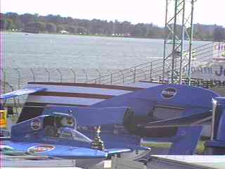

Return to the Top THUNDERFEST page. All contents Copyright © 1999 Spirit of Detroit THUNDERFEST, except where noted. All Rights Reserved. Written by Brian Reed.
All contents Copyright © 1999 Spirit of Detroit THUNDERFEST, except where noted. All Rights Reserved.
Written by Brian Reed.